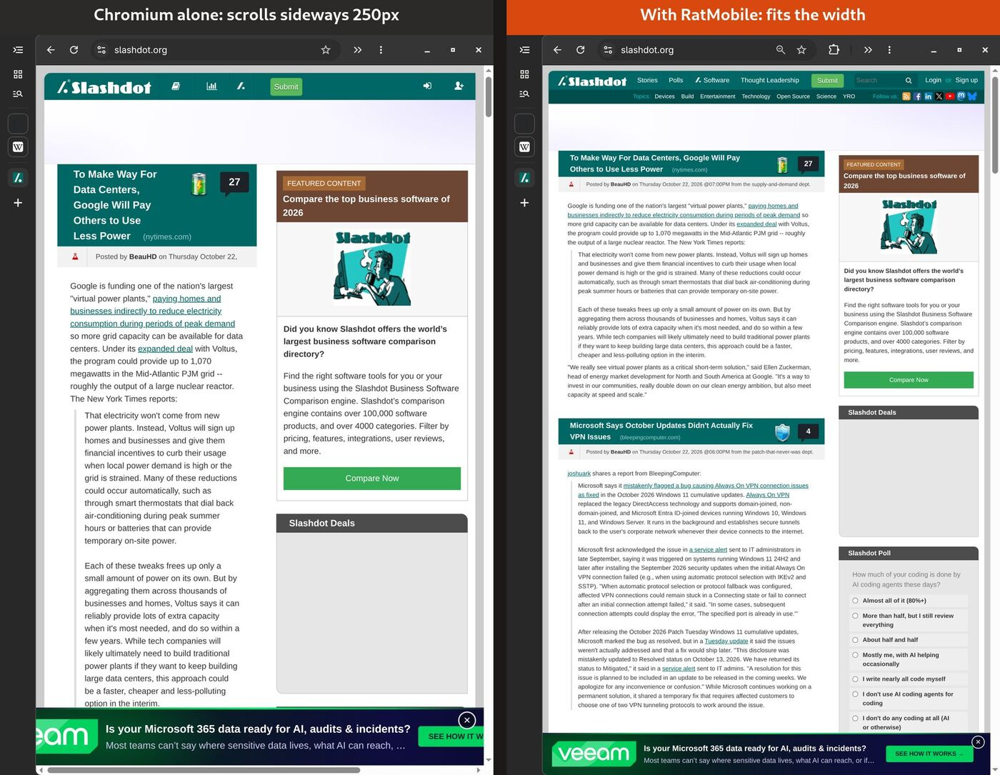

RatMobile
RatMobile
A comfortable, tablet-style Chromium. Pages always fit the width, so you never scroll sideways. Chromium's own vertical tabs are set up for a tablet. Session snapshots survive crashes and force shutdowns.
Download ratmobile.crxratmobile.zip (unpacked)
Version … · Source on GitHub (MIT). Not on the Chrome Web Store. Every push to main builds a new version, and installed copies update themselves.
Install
One command (Linux, Chromium / Chrome / Brave, native or Flatpak)
curl -fsSL https://dixonsolutions.github.io/RatMobile/install.sh | bashClose the browser first, then start it again. If it says New extension added, click Enable. The installer also sets up Chromium's vertical tabs for a tablet: collapsed to icons, expand on hover, and Continue where you left off. Add -s -- --no-tablet to leave your browser settings alone.
Drag and drop the CRX
- Download ratmobile.crx.
- Open
chrome://extensionsand turn on Developer mode (top right). - Drag
ratmobile.crxfrom your file manager onto the page, then click Add extension.
Chromium checks updates.xml every few hours. Click Update on chrome://extensions to update now. You can switch Developer mode off afterwards.
Unpacked folder, kept current by a timer
curl -fsSL https://dixonsolutions.github.io/RatMobile/install.sh | bash -s -- --unpackedThen on chrome://extensions click Load unpacked and pick ~/.local/share/ratmobile/extension. An hourly systemd user timer refreshes the folder, and RatMobile reloads itself when it changes.
What you get

No sideways scrolling. Wide images, code, tables, long links and flex rows are reflowed. Off-canvas leftovers are clipped. Fixed-width web apps zoom out to fit, the way a phone shows a desktop site, and you can pinch to zoom in. Your own Ctrl++ always wins.- Chromium's own vertical tabs, collapsed to an icon strip that is always usable, sliding over the page on hover to pick a tab, with pinned tabs on top. RatMobile adds no tab UI of its own.
- Crash-proof sessions. Windows, pinned tabs and groups are snapshotted continuously. After a crash, a
kill -9or a forced power-off, everything comes back on the next start, lazily loaded. Older snapshots stay in the Sessions view.